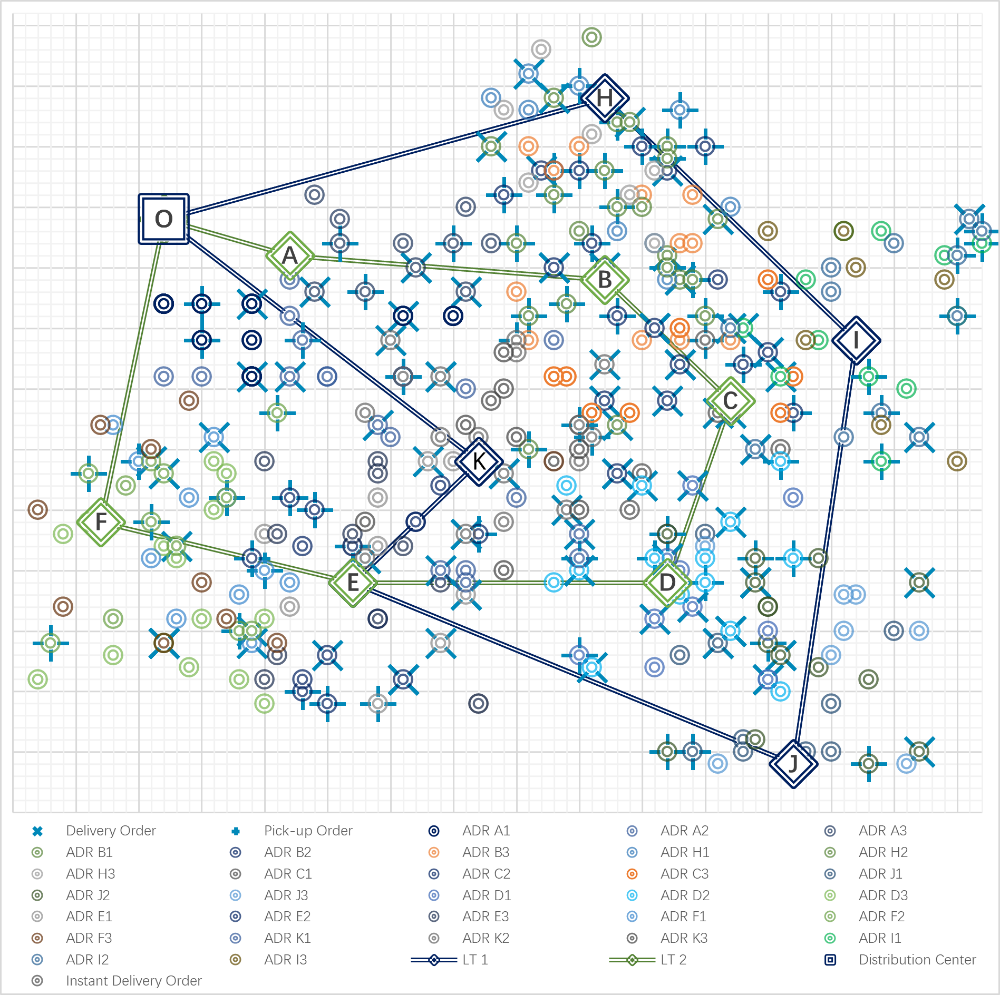

Hao Zheng
Email: zhengh22@mails.tsinghua.edu.cn | scholarhaozheng@gmail.com
GitHub: scholarhaozheng
Phone: +86 157 1112 0980
Education
-
Tsinghua University, School of Civil Engineering, Master of Science, GPA: 3.86 09/2022 - 06/2025
-
Beijing Jiaotong University, School of Traffic and Transportation, Bachelor of Engineering, GPA: 3.80 09/2018 - 06/2022
Manuscripts in Progress
Accepted & Under Revision (1 Accepted, 2 Under Revision)
-

KNOWCAST: Domain-Knowledge-Integrated Deep Learning for Metro OD and Path Flow Joint Forecasting.
Paper's Contribution: Proposed a novel deep learning framework that embeds transportation models...to jointly forecast metro OD and path flows...
My Contribution: Led model development, coding, experimental validation, and manuscript writing.
-

Integrated Routing of Trucks and Robots for Multi-Modal Urban Express Logistics.
Paper's Contribution: Proposed LT-ADR, a novel logistic system for multi-modal urban delivery that jointly optimizes truck and robot routes...
My Contribution: Led model development, coding, experimental validation, and manuscript writing.
-
Vehicle Vibration Modeling via Road Profile Reconstruction and Simulation.
In Preparation
-

DISCERN: Discrete Choice with Embedded Representation Networks.
Paper's Contribution: Proposed DISCERN, a novel framework that calibrates the behavioral parameters of traditional Discrete Choice Models (DCMs) using large-scale, macroscopic data...
My Contribution: Led model development, coding, experimental validation, and manuscript writing.
-

Multi-Staged Multi-Task Learning for Reliable Pavement Time-Series Prediction with Data Supplementation.
Paper's Contribution: Proposed a multi-staged, multi-task learning framework to overcome data scarcity in pavement performance prediction...
My Contribution: Led model development, coding, experimental validation, and manuscript writing.
-

An Integrated Topology Reconstruction and Branch-and-Price Method for Maintenance-Vehicle Route Planning.
Paper's Contribution: Developed an integrated framework for maintenance-vehicle route planning that addresses the challenge of representing linear road segments...
My Contribution: Led model development, coding, experimental validation, and manuscript writing.
Publications
Book
-
Huapu Lu, Fang Wang, Runhua Guo, Sa Xu, et al., and Hao Zheng. Green Development Paths and Strategies for Comprehensive Transportation in Ningxia. 2024
Published Journal & Conference Papers (4 Papers)
-
Improving Synchronization in High-Speed Railway and Air Intermodality: Integrated Train Timetable Rescheduling and Passenger Flow Forecasting.
-

Study on Customized Shuttle Transit Mode Responding to Spatiotemporal Inhomogeneous Demand in Super-Peak.
Paper's Contribution: Proposed a customized shuttle bus transportation model to address instantaneous mega-traffic flows with uneven demand...
My Contribution: Led model development, coding, experimental validation, and manuscript writing.
-
Coordinated Optimization of High-speed Railway Train Operation Diagram and EMU Routing.
-
Optimizing the Train Timetable for Improving Synchronization in High-Speed Railway and Air Intermodality.
Theses
Master Thesis: A Comprehensive Full-Process Planning Model for Pavement Performance Forecasting and Maintenance Strategy Implementation under Missing Data Conditions. 06/2025
Undergraduate Thesis: Customized Bus Planning Method Responding to Spatiotemporal Concentrated Demand in Super-peak. 06/2022
Open Source Projects
Projects continually updated on github.com/scholarhaozheng
Pave-ML-Multi-Task Learning for Pavement Performance Indicators (Python) Initial release: 2025
Pavement Maintenance Decision-Making and a VRP Model for Execution (Python) Initial release: 2025
Dynamic Short-Term Prediction of Urban Rail Origin-Destination Flow (Python) Initial release: 2024
Hybrid Route Planning of Same-Day and Regular Deliveries in Space-Time Networks (C#) Initial release: 2023
A Multi-Type Customized Shuttle Bus Route Planning Software (MATLAB) Initial release: 2021
Research Experience
-
A Bilevel Optimization Framework for Tolling Strategy in Autonomous Networks (Student Researcher) 06/2025 -- 10/2025
MIT-UF-NEU Summer Research Camp | Supervisor: Prof. Jinhua Zhao, Dr. Xuan Jiang
-
Digital Platform for Intelligent Road Asset Management (Code Writing: Prediction & Decision Models) 2023--2025
Project: Research on Integration and Application of Intelligent Air-Ground Equipment in Digital Transportation Management
-
Strategic Framework for Green Transportation & Infrastructure Management (Researcher & Contributing Author) 2022--2024
Project: Coordinating Ecological Protection with Carbon Peaking and Neutrality Goals... | Supervisor: Prof. Runhua Guo
-
Comparative Analysis of Road Design Standards for Belt and Road Projects (Research Analyst) 2023
Project: Differentiated Research on Engineering Projects along the Belt and Road: Sri Lanka | Supervisor: Prof. Runhua Guo
-
Optimizing Air-Rail Intermodal Transport: A Case Study of Daxing Airport (Project Leader) 2020 -- 2022
National University Student Innovation & Entrepreneurship Development Program | Supervisor: Prof. Yuyan Tan
Awards
Awarded the Second-Class Academic Excellence Scholarship 2024
Recognized as an "Outstanding Graduate of Beijing Municipality" (19/380) 06/2022
Awarded the "Outstanding Student in Transportation" by China Institute of Communications Education 11/2021
Received the Wu Fu-Zhenhua Transportation Education Excellent Student Award (1/1520) 12/2021
Awarded the Zhixing Scholarship (formerly the President's Scholarship) (10/16800) 12/2020
Awarded the Zhan Tianyou Scholarship (2/1520) (Received twice) 12/2021, 12/2020
Awarded the Excellent Academic Scholarship (Received three times) 12/2021, 12/2020, 12/2019
Skills
- Programming Skills: Proficient in MATLAB, C#, Python; Experienced with C++ and GAMS.
- English Proficiency: TOEFL: 112 (Reading: 30, Listening: 30, Speaking: 25, Writing: 27) 01/2025